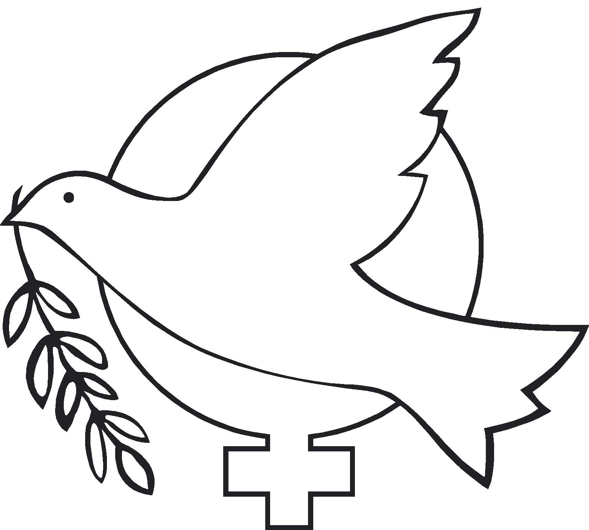

پذيرش > تریبون > مقالات > تجاوز جنسی: ابزاری مهم در نظامی گری


 تجاوز جنسی: ابزاری مهم در نظامی گری تجاوز جنسی: ابزاری مهم در نظامی گری
4 اسفند 1390 - ترجمه: زویا اسکندریان - نسخه قابل چاپ
«گروههای فعال در حوزه زنان مانند زنان سیاهپوش مدتهای مدیدی برای تغییر تفکر و ساختارهای مردسالارانه تلاش و مبارزه کرده اند اما مردان نیز باید آگاه باشند که مسئولیت اولیه مبارزه برای ایجاد تغییر بر عهده آنهاست.»
ربکا جانسون
تغییر برای برابری: بیست سال پیش، در 11 اکتبر 1991 اولین تجمع زنان سیاهپوش (Zene Crnom) در شهر بلگراد برگزار شد. این تجمع یکی از اولین تجمعات اعتراضی گروه زنان سیاهپوش بود که در خارج از اورشلیم و در مکانی برگزار می شد که تعدادی از زنان اسرائیلی و فلسطینی در سال 1989 هر هفته جهت برگزاری تجمع اعتراضی شبانه در آن گرد هم می آمدند.از آن به بعد جنبش اعتراضی زنان سیاهپوش در سرار جهان از هند تا کلمبیا و از لندن تا سیتل شکل گرفت. مبنای این اعتراضها فمینیسم ، ضد ناسیو نالیسم و ضد نظامی گری است. این گروه از روشهای مسالمت آمیز برای مبارزه با ناسیونالیسم و خشونت استفاده می کند مخصوصا در مواردی که رهبران سیاسی و اعضای ارتش کشورشان به نوعی در ارتکاب، تسهیل و یا توجیه خشونتهای قوای نظامی نقش دارند (مشارکت دارند).
اکتبر امسال، زنان از سراسر یوگوسلاوی سابق برای بیستمین سالگرد تشکیل گروه، به بلگراد دعوت شدند. من (نویسنده) و چندین زن دیگر که از Zene Crnom و گروههای فمینیست حمایت می کردند نیز در این همایش شرکت داشتیم. همایشی که در آن، اندوه و خشم را همراه با ترانه ها و در آغوش کشیدنهای همدلانه شاهد بودیم. ما سخنان زنانی را شنیدیم که در کشتار جولای 1995 در سربرنیتزا همسران و پسرانشان را از دست داده بودند. آنها از تلاششان برای یافتن پیکر بی جان مردان کشته شده گفتند اما درباره مورد تجاوز قرار گرفتنشان سخنی به زبان نیاوردند، در حالی که تعدادی از زنان شرکت کننده بازماندگان تجاوز جنسی بودند.
از روآندا تا بوسنی، تجاوزهای جنسی که به زنان این مناطق آسیب رسانده اند، جنایات شرم آوری محسوب می شوند ولی از زنان قربانی انتظار می رود بار اندوهشان از این جنایت را تنها به دوش بکشند.در مقایسه، قتل عام در جنگها به عنوان یک درد مشترک و یک جنایت جنگی پذیرفته می شود یا حداقل حس همدردی را بر می انگیزد و گاهی حتی در دادگاههای مربوط به جنایت جنگی مورد پیگیری قرار می گیرد. اما متاسفانه، در مورد تجاوز (به طور کلی) و آزارهای جنسی چنین نیست. در سال 2009 ، شورای امنیت سازمان ملل تایید کرد که تنها تعداد بسیار کمی از افرادی که مرتکب تجاوز شده اند در دادگاه جنایی بین المللی یا Roma statute ( که در رم برگزار می شود و مسئولیت سیستم قضایی ملی و بین المللی را بر عهده دارد) مورد پیگرد قرار گرفته اند.
حس عمیق نفرت و شرمساری، که گاهی با احساس ترس از طرد شدن توسط اعضای خانواده توآم می شود و همواره پیرامون مسئله تجاوز در جنگها وجود دارد، بر تاثیر تجاوز جنسی به عنوان سلاحی در پاکسازی نژادی و جنگ می افزاید. در سال 4-1993 من در یک سری جلسات مربوط به گروه بافندگی زنان شرکت می کردم. این جلسات که هر روز بعدازظهر برگزار می شدند ظاهرا برای تولید کارهای دستی بود که به فروش می رسیدند اما اهمیت این جلسات فراتر از جنبه درآمد زایی آنها بود. این جلسات بافندگی بوسیله مشاورینی که درباره مسئله تجاوز آموزش دیده بودند، برگزار می شد چرا که زنان در جلساتی که تحت عنوان جلسه مشاوره تشکیل می شد شرکت نمی کردند. با در نظر گرفتن این حقیقت که زنان بازمانده از تجاوز خود را تنها فرد مسئول برای نگهداری کودکان و یا سالخوردگان خانواده می دانستند، زمان و مکان این جلسات بگونه ای در نظر گرفته شده بود که زنان بتوانند به کارهای دستی بپردازند و درآمدی کسب کنند و افراد داوطلبی نیز از کودکان آنها مراقبت کنند. من (نویسنده) راننده یک کامیون حامل لوازم کمکی برای یک گروه حامی زنان در یوگوسلاوی سابق بودم (گروه کمکهای زنان به یوگوسلاوی)، گروهی که برای آموزش مشاورین پول جمع آوری می کرد. ما پشم و پارچه و دارو می آوریدم و سپس به زنان در ازای رومیزیهای زیبا و دستکشهای و دم پایی هایی که میبافتند پول میپرداختیم. این کار دلیلی برای گردهم آمدن زنان ایجاد می کرد و باعث می شد که آنها در حالی که با ابزار بافندگی دستی مشغول بکارند با یکدیگر گفتگو کنند.
روزی در آرامش کار و گفتگو در کارگاه بافندگی، من ناگهان متوجه شدم که فضای جدیدی در اتاق ایجاد شده است. زنان شرکت کننده در اطراف یکی از زنها جمع شده بودند که به آرامی صحبت می کرد و سپس به گریه افتاد. مشاور یک سئوال را به آرامی مطرح کرده بود و یا شاید او به نوعی اجازه داده بود (که برخی مباحث مطرح شود)...من بدون نیاز به هیچ تفسیری دریافتم که این همان زمینه ایست که باید فراهم شود تا حداقل بعضی از زنان بوسنیایی بتوانند درباره اینکه مورد تجاوز قرار گرفته اند صحبت کنند. در خارج از کارگاه بافندگی به ندرت پیش می آمد که آنها درباره این موضوع سخن بگویند.
Zene u Crnom مدارک و شواهدی از تجاوز های جنسی را جمع آوری و ارائه نموده تا پرده از جنایتی بردارد که در بوهبوهه آشوبهای جنگ نادیده گرفته شده است. کتاب سال 2008 آنها، تحت عنوان جنبه زنانه جنگ (women´s sides of war) شواهدی از تجاوز به زنان با سوابق و نژادهای متفاوت- بوسنیایی، کروورات، صرب، یهودی و آلبانیایی- را آشکارکرده است با تاکید بر این که تجاوز جنسی، توسط مردان و نظامیان بومی (جنگجویان غیر نظامی) از جنبه های گوناگون، مورد استفاده قرار می گیرد. در یک گزارش هولناک، یک دختر نوجوان گفت: من گاهی از خودم می پرسم که آیا واقعا این اتفاق برای من افتاده است!؟ برای من در میان تمامی مردم!؟ حالا برای من مرد نیروی سهمگین درد و خشونت است. می دانم که همه مردان اینگونه ( خشونتگر) نیستند اما ترسی که من در وجود خود احساس می کنم قوی تر از همه تفاسیر منطقیست. احساسات این دختر خشونت دیده، شاید برای کسانی که مصائب جنگهای داخلی در کشورهایشان متحمل شده اند قابل درک است (جنگهایی که قبلا جنگهای شهری خوانده می شدند.).
در قاره آفریقا، زنان و دختران جوان ممکن است توسط نیروی مسلح بومی که از روستاهایشان می آیند مکررا مورد تجاوز واقع شوند و سپس هنگامی که نیروهای آزادی بخش (ارتش آزادی بخش) به منطقه می آید مجددا در معرض خطر تجاوز و تعرض قرار گیرند. حتی در کمپهای پناهندگی هم هیچگونه تضمینی برای حمایت از این زنان و دختران وجود ندارد. شواهد و مدارک دیگری نشان می دهند که زنان حتی توسط نیروهای بین المللی حامی صلح هم مورد تجاوز واقع می شوند و البته توسط مردانی که به نوعی در موضع قدرت قرار دارند. به علاوه، علی رغم اینکه تصور می شود که این زنان مورد حمایت و تحت مراقبت سازمان ملل و موسسات وابسته به آن هستند، مردان پناهنده در کمپ نیز این زنان را که آسیب پذیرتر هستند مورد تعرض و آزار جنسی قرار می دهند.
از زمان تصویب قطعنامه جدید شورای امنیت ( 1325) سازمان ملل، همکاریها و مکاتبات متعددی به طور خاص برای مبارزه با خشونت علیه زنان صورت گرفته است. قطعنامه 1820 شورای امنیت ( سال 2008)، خاطر نشان می کند که تجاوز و سایر انواع آزارهای جنسی می توانند بعنوان یک جنایت جنگی، یک نوع جنایت علیه بشریت و یا اقدامی مستمر در راستای نسل کشی در نظر گرفته شوند. مفاد قطعنامه شورای امنیت در سال 2009 ، از طرح درخواست برای تعقیب قانونی مرتکبین تجاوز و یا آموزش نیروهای حامی صلح فراتر رفته است و تصریح می کند که زنان باید در تمامی سطوح تصمیم گیری در نهادهای ملی، بین المللی و منطقه ای مشارکت داده شوند. این قطعنامه همچنین بر مشارکت زنان در امر خلع سلاح، حمایت، مدیریت و تصمیم گیری های مربوط به دوران جنگ و نقش آنها در برقراری و ارتقای صلح و امنیت بین المللی تاکید دارد. چنین مفادی در قطعنامه ها اغلب نادیده گرفته می شوند.
تجاوز جنسی یک سلاح رایج جنگی است که جزئی لاینفک از قدرت و حقوقی است که توسط ساختار قدرتمند (سیستمی که در موضع قدرت است) اعمال می شوند. تجاوز به عنوان ابزار قدرتمند اشغالگری، تسخیر و همچنین به عنوان یک پاداش در قبال پیروزی نظامیان در جنگ در نظر گرفته می شود. در دوران جنگ، تجاوز مکررا اهداف نژادی و زن ستیزانه را دنبال می کند و به قصد درهم شکستن و تحقیر طرف مغلوب در جنگ بکار می رود و این احتمال که زنان قربانی تجاوز باردار شوند و کودکان دشمن را به دنیا بیاورند تاثیر گذاری این برنامه (هدف) را دو چندان می کند. خشونت جنسی تنها به جنگ و نظامی گری محدود نمی شود بلکه می تواند برای تحقیر و یا خاموش کردن صدای زنان فعال و معترض – از زنان کمپین صلح گرین هام تا زنان روزنامه نگار و فعال در جنبشها و شورشهای کشورهای عربی- بکار گرفته شود.
مسلما، مردان نیز می توانند قربانیان تجاوز جنسی باشند. تجاوز به مردان نه تنها با هدف فروکاستن موقعیت مردان به سطح موقعیت زن ( در دیدگاه و تفکری که به برتری جنس مرد معتقد است)، بلکه به عنوان تاکتیکی بکار می رود که ریشه در فرهنگ همجنس هراسی ( هموفوبیا)، ترس و تعصب دارد. حتی مردانی که هرگز فکر تجاوز به یک زن به ذهنشان خطور نکرده نیز بطور مکرر در ساخته و پرداخته شدن ساختار و تفکر و هنجارهایی نقش داشته اند که تجاوز به عنوان نمادی از قدرت به آنها وابسته است. مردانی که در تولید، تجارت و کنترل سلاحها و ابزارهای اعمال زور و تجاوز نقش دارند و از سیستم اقتصادی وابسته به صنایع جنگ سود سیاسی و مالی می برند نیز در این جرم (تجاوز) شریکند.
مبارزه با خشونتهای جنسی به تلاشی بیش از تشویق و حمایت از قطعنامه های شورای امنیت نیاز دارد. البته این قطعنامه ها و حمایتها بهتر از بی اعتنایی است ( از هیچ بهتر است) ولی این تلاشها وقتی که به زنان به عنوان قربانیان اصلی تجاوز که به صورت ذاتی آسیب پذیرتر نگاه میکنند از هدفشان دور می شوند. بر اساس آنچه توسط گروه زنان سیاهپوش و بسیاری از گروهای فمینیست اثبات شده است علی رغم تمامی مخالفت ها ،تهدیدها و منابع محدود مالی زنان مسیر مبارزه با خشونت جنسی را هدایت می کنند. مردان - به شکل فردی یا گروهی- باید بیش از هر زمان دیگری از مسئولیت خود آگاه باشند و برای به چالش کشیدن و تغییر تفکر، ساختار و انتظارات مردسالارانه و نظامی گری (جنگ طلبی) تلاش کنند.
ارسال به
بالاترین
،
توییتر
،
فریندفید
،
فیسبوک
در همين بخش :
 دهمین دورۀ مراسم تندیس صدیقه دولت آبادی ۱۳۹۲ دهمین دورۀ مراسم تندیس صدیقه دولت آبادی ۱۳۹۲
کارت پستالهایی به بهانهی هشت مارس و به یاد همهی مبارزین راه برابری
بیانیه بیش از 350 تن از مدافعان حقوق زنان به مناسبت روز جهانی زن؛ زنان هر روز فرودستتر میشوند
لباسی که برای تن ما دوخته اند! /اعظم بهرامی
چالشها و چشمانداز فعالیت مدنی زنان
ديگر بخش ها :
طرح یک میلیون امضا
|
مقالات
|
سایت نوشته ها
|
اخبار
|
گزارش كمپين
|
گفت و گو
|
علیه سکوت
|
كوچه به كوچه
|
نامه های شما
|
گزارش ویژه
|
گفتگو با اعضا
|
ویژه سالگرد کمپین
|
تصویر برابری
|
دل آرام علی
|
تریبون
|
مقالات
|
تاریخ شفاهی
|
خارج از چارچوب
|
کتابخانه
|
درباره کمپین
|
کمپین در شهرها
|
کمپین در بند
|
صدای تغییر
|
ویژه 22 خرداد
|
لایحه حمایت از خانواده
|
گالری
|
عشا مومنی
|
امیر یعقوبعلی
|
خدیجه مقدم
|
راحله عسگری زاده و نسیم خسروی
|
پروین اردلان،جلوه جواهری، مریم حسین خواه، ناهید کشاورز
|
زینب پیغمبرزاده
|
سعیده امین، سارا ایمانیان، محبوبه حسین زاده، ناهید کشاورز و همایون نامی
|
احترام شادفر
|
نسیم سرابندی زاده،فاطمه دهدشتی
|
وبلاگ مهمان
|
پرونده خرم آباد
|
دستگیری ها
|
مریم مالک
|
پرستو اللهیاری
|
مهرنوش اعتمادی
|
سمیه رشیدی
|
Other Languages
|
همراهان
|
«فراخوان کمپین ده روز با بهاره هدایت»
| English
|